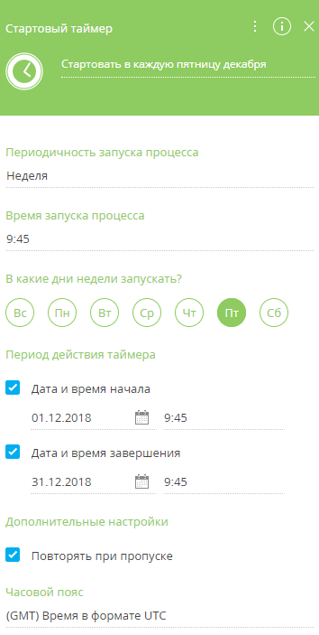
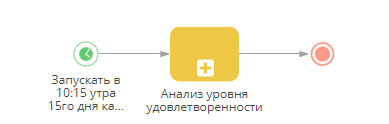
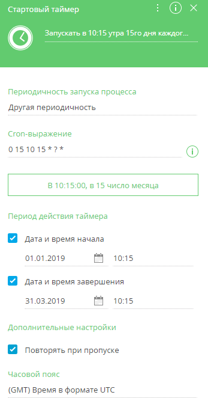
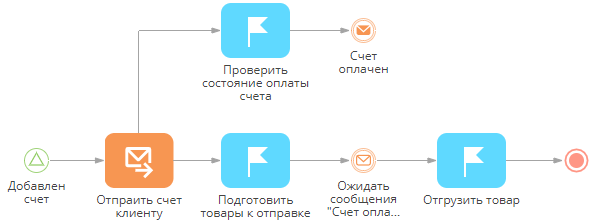

Использовать события для ветвления процесса
Для ветвления процесса в зависимости от наступления тех или иных событий используется логический оператор Исключающее “ИЛИ” по событиям. События, от выполнения которых зависит ветвление процесса, помещаются на исходящие потоки логического оператора (Рис. 1).
Для создания договора используется элемент Открыть страницу редактирования. Настройки на странице идентичны настройкам при создании нового документа.
Для отправки договора на визирование необходимо использовать элемент Автогененируемая страница. Настройка данного элемента описана в статье Элемент процесса Автогенерируемая страница. После отправки договора на визирование необходимо добавить визу на страницу договора. Для добавления визы используется элемент Добавить данные.
Схема с реализованным ветвлением представлена на Рис. 2.
Чтобы построить ветвление процесса, исходящий поток каждой ветви которого должен активироваться в зависимости от результата:
-
Поместите логический оператор Исключающее “ИЛИ” по событиям после действия “Добавить визу” и соедините потоком управления.
-
Поместите элемент Обработка сигнала после логического оператора и соедините потоком управления.
-
Заполните страницу настройки элемента Обработка сигнала в случае успешного визирования договора (Рис. 3):
-
В поле Сигнал какого типа получен? выберите значение “Получен сигнал от объекта”.
-
Нажмите на поле Идентификатор записи, чтобы открыть окно определения значения параметра:
-
Выберите элемент Добавить визу на вкладке Элементы процесса.
-
Кликните дважды на значении параметра Id созданной записи. Выбранное значение появится в верхней части окна определения значения параметра.
-
- Нажмите кнопку Сохранить.
- Укажите объект, от которого необходимо получить сигнал. В нашем примере это объект “Виза договора”.
- В поле Какое событие должно произойти? укажите “Изменение записи”.
- Выберите колонку, изменения в которой активируют сигнал. В нашем примере это колонка “Состояние”.
- Настройте условия, которым должна соответствовать запись после изменения. Чтобы сигнал активировался после установки визы и открылась страница ранее созданного договора для его подписания, состояние визы должно быть положительным.
-
Поместите еще один элемент Обработка сигнала после логического оператора и соедините потоком управления. Это сигнал “Отправить на доработку”, который должен срабатывать, если визирующий отклонил визу.
-
Для запуска обрабатывающего сигнала заполните панель настройки элемента Обработка сигнала (Рис. 4): Настройки идентичны настройкам сигнала, который срабатывает после получения визы, с той разницей, что в условиях фильтрации необходимо указать “Состояние=Отрицательная”.
-
Добавьте элемент Открыть страницу редактирования после элементов “Договор завизирован” и “Отправить на доработку”. В случае положительной визы открывается ранее созданный договор, в котором необходимо изменить состояние на “Подписан”. В случае отрицательной визы открывается страница ранее созданного договора для доработки.
-
Сохраните процесс.
Запускать процесс автоматически после изменений в Creatio
Бизнес-процессы могут запускаться автоматически после добавления, изменения или удаления записи в Creatio. Чтобы настроить такой процесс, используйте начальный элемент Сигнал как стартовое событие. Детальное описание элемента читайте в статье Начальное событие Cигнал.
Например, процесс обработки нового клиента может запускаться автоматически каждый раз при регистрации новой записи клиента в Creatio.
- Для автоматического запуска процесса после изменений в Creatio используйте начальное событие Cигнал (Рис. 5) и заполните область настройки элемента (Рис. 6):
-
В поле Сигнал какого типа получен? выберите значение “Получен сигнал от объекта”.
-
В поле Объект выберите объект (раздел, деталь или справочник), изменения которого автоматически запустят процесс. Например, для запуска процесса в ответ на изменения в разделе Контрагенты, выберите объект “Контрагент”.
-
В поле Какое событие должно произойти? укажите тип события (добавление, изменение или удаление записи) в выбранном объекте, которое запустит процесс автоматически. Например, чтобы запускать процесс каждый раз при добавлении нового контрагента, выберите значение “Добавление записи”.
-
Укажите любые дополнительные требования к записи, которая должна инициировать сигнал. Чтобы сигнал срабатывал только при добавлении контрагента типа “Клиент”, установите фильтр “Тип = Клиент”.
-
-
Сохраните процесс.
В результате процесс будет запущен автоматически каждый раз, когда соответствующие изменения будут происходить в записях Creatio. Например, процесс обработки нового клиента запустится при добавлении нового контрагента с типом “Клиент”.
Запускать процесс из другого процесса по сигналу
Для запуска бизнес-процесса по сигналу из другого процсса добавьте элемент Генерация сигнала на диаграмму родительского процесса. А связанный процесс, который должен запускаться по произвольному сигналу из родительского процесса, начните с элемента Сигнал.
Например, можно настроить бизнес-процесс “Подготовка к вебинару”, по сигналу из которого будут запускаться несколько параллельных независимых процессов. Это могут быть процессы по отправке напоминаний участникам вебинара, по сбору обратной связи и т. д.
-
Добавьте элемент Генерация сигнала, который будет передавать сигнал для запуска связанных процессов, на диаграмму бизнес-процесса. Например, связанные процессы могут стартовать после того, как будет выполнена задача “Подтвердить дату вебинара”. Так, элемент Генерация сигнала, который передаст сигнал “Дата вебинара подтверждена”, должен быть добавлен на схему процесса после задачи по подтверждению даты вебинара (Рис. 7).
-
В поле Какой сигнал сгенерировать панели настройки свойств элемента Генерация синала укажите название пользовательского сигнала, который будет передаваться. Убедитесь, что указанное название не совпадает с названиями других пользовательских сигналов. Можно использовать произвольные названия сигнала, например “Дата вебинара подтверждена” (Рис. 8).
-
Добавьте начальный элемент Сигнал на диаграмму связанного процесса, который должен запускаться по сигналу из родительского процесса (Рис. 9)
-
Настройте свойства элемента Сигнал (Рис. 10):
-
В поле Сигнал какого типа получен? выберите “Получен произвольный сигнал”.
-
В поле Сигнал скопируйте название сигнала, указанного в настройках элемента Геренация сигнала основного процесса, например, “Дата вебинара подтверждена”.
-
-
Сохраните процесс.
В результате связанные процессы будут запущены автоматически, после получения соответствующего сигнала из основного процесса.
Запускать процесс в определенное время
Вы можете запустить бизнес-процесс один раз, в определенную дату, используя элемент Стартовый таймер. Детальное описание элемента читайте в статье Событие Стартовый таймер.
Например, можно запланировать подготовку презентации для клиента на конкретную дату и время.
Чтобы настроить процесс, который выполняется в определенную дату:
- Добавьте элемент Стартовый таймер на диаграмме процесса в качестве начального события (Рис. 11) и заполните область настройки элемента (Рис. 12):
-
В поле Периодичность запуска процесса выберите “Однократно”.
-
В поле Дата и время запуска укажите дату и время, когда процесс будет запущен.
-
Повторять при пропуске — отметьте признак в поле Дополнительные настройки, чтобы перезапустить таймер, если он не смог стартовать, например, во время перезагрузки сайта на сервере. В этом случае процесс запустится автоматически в ближайшее доступное время.
-
Укажите нужную временную зону в поле Часовой пояс. Процесс запустится согласно времени в этом часовом поясе.
-
-
Сохраните процесс.
В результате процесс запустится автоматически, во время, указанное при настройке свойств элемента Стартовый таймер.
Запускать процесс еженедельно
Вы можете настроить процесс, который запускается автоматически еженедельно, в определенный день и в указанное время.
Так можно настроить процесс отправки напоминаний о вебинаре, который проводится в течение декабря по пятницам.
Для настройки процесса, который запускается автоматически еженедельно:
- Добавьте начальный элемент Стартовый таймер на диаграмму процесса (Рис. 13) и настройте его свойства (Рис. 14):

-
В поле Периодичность запуска процесса выберите “Неделя”.
-
В поле Время запуска процесса укажите время, в которое должен запускаться процесс.
-
В поле В какие дни недели запускать? укажите дни недели, в которые процесс будет запускаться.
-
В блоке Период действия таймера укажите период, в течение которого будет действовать такой режим запуска процесса. Например, если необходимо, чтобы процесс запускался в течение декабря, выберите 01.12.2018 в поле Дата и время начала и 31.12.2018.
-
Установите признак Повторять при пропуске, чтобы процесс запустился повторно, даже если в указанное время сигнал Стартовый таймер не сработает, например, по причине сбоя сервера. В этом случае процесс запустится автоматически в ближайшее доступное время.
-
Укажите нужную временную зону в поле Часовой пояс. Процесс запустится по времени этого часового пояса.
-
-
Сохраните процесс.
В результате процесс будет запускаться автоматически, по указанному режиму в указанный период. Так, процесс из нашего примера будет запускаться каждую пятницу в течение октября, в 9:45 утра.
Запускать процесс периодически по cron-выражению
Для настройки пользовательских режимов запуска бизнес-процессов в Creatio используются cron-выражения. Функциональность сron-выражений позволяет более гибко настраивать дату и время запуска бизнес-процессов с помощью специальных cron-символов (цифры, слова и/или символы, размещенные в строго определенном порядке). Больше информации о синтаксисе сron-выражений доступно в документации QUARTZ.
Например, можно настроить, чтобы бизнес-процесс запускался в определенное время в 15 день месяца в течение января, февраля и марта.
Для настройки пользовательского режима запуска бизнес-процесса:
- Добавьте элемент Стартовый таймер на диаграмму процесса (Рис. 15). Настройте свойства элемента (Рис. 16):
Рис. 15 — Запуск бизнес-процесса с пользовательской периодичностьюРис. 16 — Пример настройки свойств элемента Стартовый таймер для запуска процесса с пользовательской периодичностью
-
В поле Периодичность запуска процесса выберите “Другая периодичность”.
-
В поле Cron-выражение введите выражение, обозначающее периодичность, с которой будет запускаться процесс. Если введенное cron-выражение корректно, то под полем Cron-выражение вы увидите время и дату запуска процесса в традиционном виде. Например, используйте выражение “0 15 10 15 * ?” для запуска процесса в 10:15 утра 15го дня каждого месяца. Больше информации о cron-выражениях ищите в документации QUARTZ.
-
В блоке Период действия таймера укажите период, в течение которого будет действовать такой режим запуска процесса. Например, если необходимо, чтобы процесс запускался c января по март 2019, выберите 01.01.2019 в поле Дата и время начала и 31.03.2019 в поле Дата и время завершения.
-
Установите признак Повторять при пропуске, чтобы процесс запустился повторно, даже если в указанное время сигнал Стартовый таймер не сработает, например, по причине сбоя сервера. В этом случае процесс запустится автоматически в ближайшее доступное время.
-
Укажите нужную временную зону в поле Часовой пояс. Процесс запустится согласно времени в этом часовом поясе.
-
-
Сохраните процесс.
В результате процесс будет запускаться автоматически, по указанному режиму в указанный период. Например, в 10:15 каждого 15 дня месяца с января по март 2019, по времени UTS.
Запускать процесс по факту поступления сообщения
Промежуточные сообщения используются для синхронизации независимых потоков в рамках одного процесса. Так, можно настроить бизнес-процесс, который на определенном шаге прекратит выполняться, и будет ожидать поступления определенного сообщения для активации следующего элемента на схеме процесса и продолжения выполнения.
Например, бизнес-процесс может ожидать сообщения об оплате счета, прежде чем переходить на шаг отправки товара.
Для настройки возобновления выполнения процесса при поступлении сообщения:
-
Добавьте два промежуточных элемента, работающих с сообщениями, на схему процесса (Рис. 17).
-
Элемент Генерация сообщения разместите на схеме после задачи по процессу, после выполнения которой должно передаваться активирующее процесс сообщение.
-
Элемент Обработка сообщения разместите перед задачей, которая должна выполняться после поступления сообщения.
Рис. 17 — Возобновление выполнения процесса после поступления сообщения
-
-
В поле Какое сообщение сгенерировать? панели настройки элемента Генерация сообщения (Рис. 18) введите произвольное сообщение. Текст может быть произвольным, например, “Счет оплачен”.
-
Заполните панель настройки элемента Обработка сообщения (Рис. 19):
-
В поле Какое сообщение должно быть получено? скопируйте сообщение, указанное в настройках элемента Генерация сообщения.
-
Если установить признак Выполнять следующие элементы в фоновом режиме, то все шаги процесса, следующие после данного элемента, будут выполнятсья в фоновом режиме без отображения маски загрузки.
-
-
Сохраните процесс.
В результате выполненных настроек процесс прекратит выполняться на шаге Обработка сообщения и возобновит выполнение только после поступления сообщения, указанного в настройках элемента Генерация сообщения.